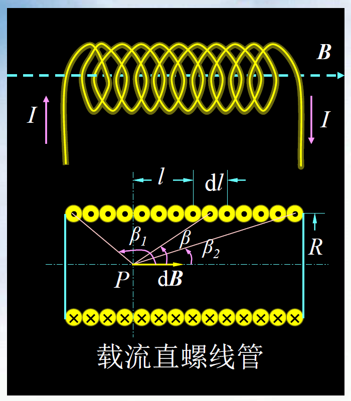
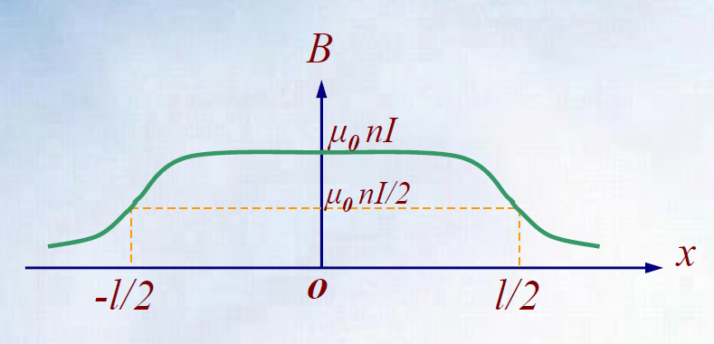
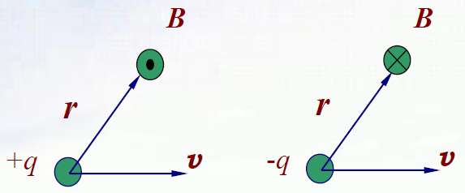
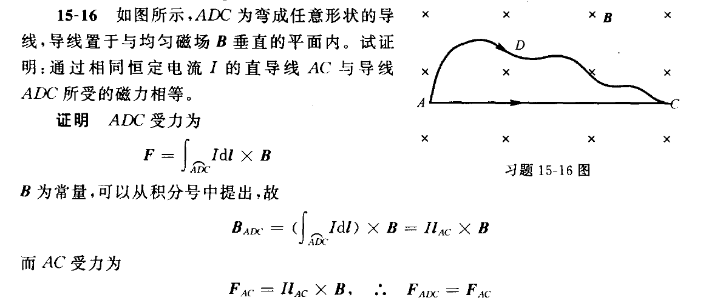
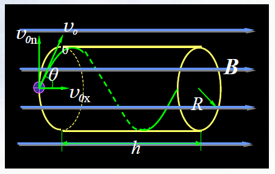
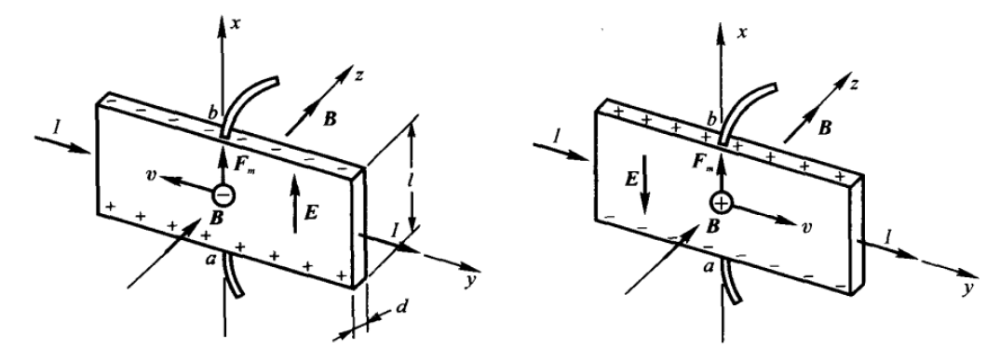
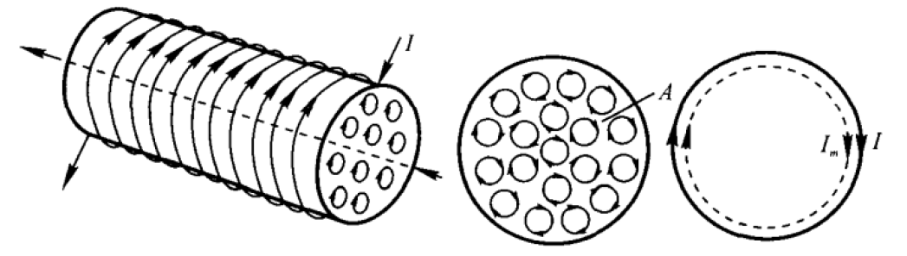
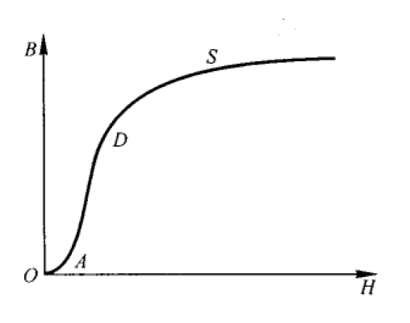
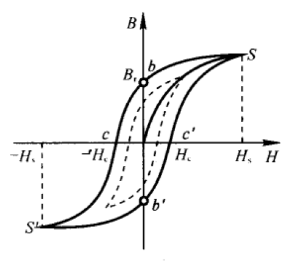

电磁学部分⚓︎
约 5132 个字 预计阅读时间 26 分钟
静电场⚓︎
电场强度⚓︎
电荷守恒定律：一个孤立系统内无论发生什么过程，总电荷数保持不变。电荷既不能被创造、也不能被消灭，它只能从一个物体转移到另一个物体，或者从物体的一个部分转移到另一个部分。
电子电荷量 \(e \approx 1.6 \times 10^{-19} \text{C}\)
库仑定律：适用于真空中两个点电荷，同种电荷相斥，异种电荷相吸。其中 真空中介电常数 \(\varepsilon_0 = 8.85 \times 10^{-12} \rm{C^2/(N \cdot m^2)}\)
注：公式右边的 \(\hat{\bm{r}}_{12}\) 表示的是矢量的方向，而不代表具体的值，下面如果出现类似的记号，意义与之类似。
电场强度：\(\bm{E} = \dfrac{\bm{F}}{q_0}\)（单位：\(\rm{N/C}\) 或 \(\rm{V/m}\)）
点电荷的电场强度：\(\bm{E} = \dfrac{q}{4 \pi \varepsilon_0 r^2} \hat{\bm{r}}\)
求连续分布电荷产生的总场强
题目往往会给出电荷密度（包括线密度 \(\lambda\)、面密度 \(\sigma\)、体密度 \(\rho\)）的信息。一般的解题步骤如下：
- 运用微元法。先求一个带电量为 \(\mathrm{d}q = \lambda \mathrm{d}l\)（或 \(\sigma \mathrm{d}S,\ \rho \mathrm{d}V\)）的点电荷产生的场强 \(\mathrm{d}\bm{E}\)
- 再对所有电荷积分，得到：\(\bm{E} = \int \mathrm{d} \bm{E} = \int \dfrac{1}{4 \pi \varepsilon_0} \dfrac{\mathrm{d} q}{r^2} \hat{\bm{r}}\)
电通量：穿过曲面 \(S\) 的电通量 = 穿过该曲面的电场线条数，即 \(\Phi_e = \oiint\limits_S \bm{E} \cdot \mathrm{d}\bm{S}\)
- \(E \perp S \Rightarrow \Phi_e = ES\)
- 平面 \(S\) 的法线与 \(E\) 的夹角为 \(\theta \Rightarrow \Phi_e = ES \cos \theta = \bm{E \cdot S}\)
 高斯定理：通过任意闭合曲面的电通量 = 该曲面所包围的所有电荷量的代数和 / \(\varepsilon_0\)
高斯定理：通过任意闭合曲面的电通量 = 该曲面所包围的所有电荷量的代数和 / \(\varepsilon_0\)
 常用结论：
常用结论：
- 连续分布电荷：\(\Phi_e = \oiint\limits_S \bm{E} \cdot \mathrm{d} \bm{S} = \dfrac{1}{\varepsilon_0}\iiint\limits_V \rho \text{d} V\)
- 均匀带电球面：\(E = \begin{cases}\dfrac{q}{4 \pi \varepsilon_0 r^2} & R > r \\ 0 & R < r\end{cases}\)（同等电量点电荷的场强）
- 无限长带电直线 / 圆柱面 / 圆柱体（线密度 \(\lambda\)
） ：\(E = \dfrac{\lambda}{2 \pi \varepsilon_0 r}\) - 无限大平面（可有厚度
） （面密度 \(\sigma\)） ：\(E = \dfrac{\sigma}{2 \varepsilon_0}\)
电势⚓︎
电场力所做的功，仅与电荷电量大小及其始末位置有关，与电荷移动的路径无关。所以电场力是一种保守力，静电场是一种保守场。
静电场环路定理：在静电场中，电场强度沿任意闭合回路的线积分恒等于 0，即 \(\oint \bm{E} \cdot \mathrm{d} \bm{l} = 0\)
电势能：在点电荷 \(q_0\) 从 \(a\) 点移动到 \(b\) 点的过程中，电场力所做的功 = 电荷电势能的增量的负值。
电势能是相对的，对于有限分布的电荷系统，取无穷远处电势能为 0，则将电荷从 \(p\) 点移动到无穷远时，\(p\) 点的电势能 = 电场力所做的功，即：$W_p = q_0 \int_p^{\infty} \bm{E} \mathrm{d}\bm{l} $
电势：\(U_p = \dfrac{W_p}{q_0} = \int_p^{p_0}\bm{E} \cdot \mathrm{d}\bm{l}\)，其中 \(p_0\) 是电势为 0 的参考点。
现在，电场力做功可以表示为：$ A_{ab} = \int_a^b q_0 \bm{E} \cdot \mathrm{d}\bm{l} = q_0(U_a - U_b)$
单个点电荷 \(q\) 产生的电势分布为：\(U = \dfrac{q}{4\pi \varepsilon_0 r}\)，其中 \(r\) 为到点电荷的距离
- 根据电势叠加定理，可以分别算出各个点电荷在某点的电势，然后相加
- 若电荷连续分布，则分解为微元电荷 \(\text{d}q\) = 电荷密度与几何微元的乘积，然后表示出 \(\text{d}U = \dfrac{\text{d}q}{4\pi \varepsilon_0 r}\) 后积分；或者在已知 \(\bm{E}\) 的情况下直接按定义式计算
常用结论（其实就是场强对距离 \(r\) 的积分，只要记住上面的“常用结论”就行了
- 均匀带电空心球壳：\(U = \begin{cases}\dfrac{q}{4\pi \varepsilon_0 r} & r < R \\ \dfrac{q}{4\pi \varepsilon_0 R} & r > R\end{cases}\)
- 无限长均匀带电直线：\(U_P = -\dfrac{\lambda}{2 \pi \varepsilon_0} \ln r\)，其中 \(r\) 为 \(P\) 点距带电直线的距离
- 无限大平面：\(U = -\dfrac{\sigma}{2 \varepsilon_0}r\)
例题
等势面的性质：
- 等势面与电场线处处正交
- 等势面密集的地方场强大，稀疏处场强小
用电势分布求解电场：电场中任一点的电场强度矢量 = 该点电势梯度矢量的负值
静电场中的导体与电介质⚓︎
导体⚓︎
-
静电平衡的特点：
- 电荷分布：
- 电荷只分布在导体表面
- 导体表面场强与电荷面密度的关系：\(E = \dfrac{\sigma}{\varepsilon_0}\)
- 孤立导体曲率越大的地方，电荷面密度越大
- 场强与电势
- 导体内部场强处处为 0，导体表面的场强与表面垂直
- 导体是一个等势体，导体表面是一个等势面
- 电荷分布：
-
静电屏蔽
- 外部场强无法影响到空腔内，只能引起外表面电荷分布的变化
- 外表面未接地时，空腔内的电荷将影响导体外的电场
- 若外表面接地（电势 = 0
） ，则内外电场互不干扰
静电场中金属导体问题求解的步骤
通常题目要求导体的电荷分布 / 电荷量 / 电场分布 / 电势等
- 根据静电平衡时导体内无场强与电荷守恒，用高斯定理联系场强与电荷量，求解各个面的电荷量
- 根据电荷量，用高斯定理、场强叠加等计算导体外部（空腔和外界）的点电荷产生的场强
- 根据场强，用电势定义式计算导体表面的电势
- 一些操作的含义
- 接地：改变导体所带电荷量，使其电势为 0
- 连接：两个导体等电势，电荷在两个导体间重新分布
电容器⚓︎
电容单位：\(F\)，常用单位有：\(1\mu F = 10^{-6}F, 1pF = 10^{-12}F\)。
各类电容器：
- 平行板电容器：两极板面积 \(S\)，间距 \(d\)，分别带电荷 \(+Q\) 和 \(-Q\)
- 公式：\(C = \dfrac{Q}{U_A - U_B} = \dfrac{\varepsilon_0 S}{d}\)
- 圆柱形电容器：内外柱面半径分别为 \(R_A\)、\(R_B\)，内外柱面线电荷密度为 \(+\lambda\)、\(-\lambda\)，长 \(l \gg (R_B - R_A)\)
- 公式：\(C = \dfrac{Q}{U_A - U_B} = \dfrac{\lambda l}{U_A - U_B} = \dfrac{2\pi \varepsilon_0 l}{\ln \frac{R_B}{R_A}}\)
- 球形电容器：两同心金属球壳半径分别为 \(R_A, R_B\)，电荷分别为 \(+q, -q\)
- 公式：\(C = \dfrac{Q}{U_A - U_B} = 4 \pi \varepsilon_0 \dfrac{R_BR_A}{(R_B - R_A)}\)
电容的串并联
- 串联：
- 电容减小：\(\dfrac{1}{C} = \dfrac{1}{C_1} + \dfrac{1}{C_2} + \dots + \dfrac{1}{C_n}\)
- 耐压增加：\(U_A - U_B = \sum\limits_{i=1}^n U_i\)
- 并联：
- 电容增加：\(C = C_1 + C_2 + \dots + C_n\)
- 耐压减小：\(U_A - U_B = \min\{U_1, U_2, \dots, U_n\}\)
电介质⚓︎
-
电介质（可被电极化的绝缘体）在电场中的表现：
- 外电场在电介质上，会使介质表面产生极化电荷，从而影响电场
- 介质内部产生的电场不会与外电场抵消，因此介质内部场强不等于 0
- 电介质在平行板电容器中：\(U = \dfrac{U_0}{\varepsilon_r}, C = \varepsilon_r C_0 = \dfrac{\varepsilon S}{d}, E = \dfrac{E_0}{\varepsilon_r} = \dfrac{\sigma}{\varepsilon}\)，其中 \(\varepsilon_r\) 为相对介电常数
-
极化强度\(\bm{P}\)：某点对应的体积微元中所有分子电矩的矢量和。当外加电场不太大时，有线性关系：
\[ P = \varepsilon_0 \chi_e \bm{E} = \varepsilon_0(\varepsilon_r - 1)\bm{E} \]其中 \(\chi_e\) 为电极化率
-
极化电荷面密度：均匀电介质极化时，电介质表面上某点处的极化电荷面密度 \(\sigma '\) 等于极化强度在该点表面的外法向分量。
\[ \sigma ' = \bm{P} \cdot \bm{e_n} \] -
电位移\(\bm{D} = \varepsilon_0 \bm{E} + \bm{P} = (1 + \chi_e) \varepsilon_0 \bm{E} = \varepsilon_r \varepsilon_0 \bm{E} = \varepsilon \bm{E}\)（单位：\(\text{C/m}^2\)
） ，其中 \(\varepsilon\) 为介电常数。 -
电介质中的高斯定理：\(\oiint\limits_S \bm{D} \text{d} \bm{S} = \sum q_0\)
含电介质的电场问题求解
- 若题目没有给出电荷量，且需要求出电容，则首先确定两极板间的电荷量（等量异号）
- 根据电介质高斯定理求出 \(\bm{D}\)
- 根据 \(\bm{D}\) 和 \(\bm{E}\) 的比例关系求出 \(\bm{E}\)
- 根据电势定义和 \(\bm{E}\) 得到两极板电势差，再根据电容定义得到电容
- 若有要求，则继续根据 \(\bm{E}\) 求 \(\bm{P}\) 和 \(\sigma '\)
例题

静电场中的能量⚓︎
- 点电荷系统的能量：
- 离散分布：\(W = \dfrac{1}{2}\sum q_i U_i\)
- 连续分布（电荷体 / 电荷面
） ：\(W = \dfrac{1}{2} \iiint\limits_V U \rho \text{d} V = \dfrac{1}{2} \iint\limits_S U \sigma \text{d} S\)
- 电容器的能量：\(W = \dfrac{1}{2}\dfrac{Q^2}{C} = \dfrac{1}{2}Q(U_A - U_B) = \dfrac{1}{2}C(U_A - U_B)^2\)
- 电场能量
- 电（场）能（量）密度：\(\omega_e = \dfrac{W}{V} = \dfrac{1}{2}\varepsilon E^2 = \dfrac{1}{2}DE\)
- 非均匀电场：\(W = \iiint\limits_V \omega_e \text{d}V\)
稳恒电流⚓︎
-
电流强度（标量）\(I = \dfrac{\text{d}q}{\text{d}t}\)
-
电流密度（矢量）\(I = \oiint\limits_S \bm{j} \text{d}\bm{S}\)
- 这里给出的是面密度公式，题目中也可能会出现线密度的形式
-
漂流运动：自由电子作逆着电场方向的定向运动
- 漂移速度：漂移运动的平均速度，它与电流密度的关系为 \(\bm{j} = -ne\bm{v}_d\)（其中 \(n\) 为自由电子数密度，\(e\) 为基本电荷）
-
导体中各点电流密度矢量 \(\bm{j}\) 或通过导体任一截面的电流强度 \(I\) 不随时间变化的电流
\[ \oiint\limits_S \bm{j} \text{d}\bm{S} = -\dfrac{\text{d}q}{\text{d}t} = 0 \] -
欧姆定律：\(I = \dfrac{U}{R}\)
- 电阻决定式：\(R = \rho \dfrac{l}{S}\)
- 金属材料的电阻率与温度的关系：\(\rho_t = \rho_0 (1 + \alpha t)\)
- 欧姆定律的微分形式：\(\bm{j} = \gamma \mathbf{E} = -en \bf{V}_d\)，其中 \(\gamma = \dfrac{1}{\rho}\) 为电导率
- 电动势：在电源内部，将单位正电荷从负极移到正极时非静电力所做的功
稳恒磁场⚓︎
磁感应强度⚓︎
- 洛伦兹力：运动电荷在某点收到的磁场作用力 \(\bm{F} = q\bm{v} \times \bm{B}\)（用左手定则判定方向）
注：如果给出了 \(\bm{v}\) 和 \(\bm{B}\) 的三维坐标，那么需要用行列式的方法计算。
- 右手螺旋法则
- 直线电流产生的磁场：大拇指指向电流方向，四指绕行方向为 \(\bm{B}\) 的方向
- 环形电流产生的磁场：大拇指指向 \(\bm{B}\) 的方向，四指绕行方向为电流方向
毕奥 - 萨伐尔定律：长为 \(\text{d} \bm{l}\) 的电流元 \(I\text{d} \bm{l}\)（微元，视为一个点）在点 \(P\) 处的产生的磁感应强度为
其中 \(\bm{r}\) 为电流元指向 \(P\) 的矢量，\(\mu_0 = 4 \pi \times 10^{-7} \text{N/A}^2\) 为真空磁导率。
常用结论：
其他结论：
- 无限长直导线距离 \(a\) 处（长直载流导线的特殊情况，\(L \gg a\)
） ：\(B = \dfrac{\mu_0 I}{2 \pi a}\) - 载流圆线圈的特殊情况：
- 圆心：\(B(0) = \dfrac{\mu_0 I}{2 R}\)
- \(N\) 匝圆线圈：\(B(0) = \dfrac{\mu_0 IN}{2 R}\)
- 半圆弧？
- 在轴线上远离圆线圈（\(x \ge R\)
） ：\(B = \dfrac{\mu_0 IR^2}{2x^3} = \dfrac{\mu_0 IS}{2\pi x^3}\)，其中 \(S\) 为线圈面积
- 圆心：\(B(0) = \dfrac{\mu_0 I}{2 R}\)
- 圆弧形电流（圆心角 \(\theta\)）在圆心处：\(B = \dfrac{\mu_0 I}{2R} \dfrac{\theta}{2 \pi}\)（
可理解为载流圆线圈圆心处残缺版） -
载流直螺线管内部（对 \(P\) 点）的磁场：\(B = \dfrac{\mu_0}{2} nI (\cos \beta_2 - \cos \beta_1)\)
- 当 \(L \gg R\) 时，\(B = \mu_0 nI\)
- 在长直螺线管上的两端点：\(B = \dfrac{1}{2} \mu_0 nI\)
 -
亥姆霍兹线圈
由毕奥 - 萨伐尔定律于叠加原理求磁感应强度的基本流程
- 最一般的情况：根据微元法表示出 \(I \text{d} \bm{l}\)，代入公式得到 \(\text{d} \bm{B}\) 后进行积分
- 最常见的情形：产生磁场的电流可以分解为直流电流、圆形电流等基本单元，根据已有结论分别求出各部分产生的磁场，再根据叠加原理将 \(\bm{B}\) 相加
- 若电流是连续分布的，则先得到 \(\text{d} \bm{B} = \dots \text{d} I\)，再积分
-
单个运动电荷 \(q\) 以速度 \(\bm{v}\) 运动产生的磁感应强度：\(\bm{B} = \dfrac{\mu_0}{4 \pi} \dfrac{q \bm{v} \times \bm{r}}{r^3} = \mu_0 \varepsilon_0 \bm{v} \times \bm{E}\)
- 方向：
 -
当多电荷（连续分布电荷）匀速运动时，可考察某截面单位时间通过的电荷量而求等效电流 \(I\)
安培环路定律：在稳恒磁场中，磁感应强度沿任何回路的线积分等于闭合回路所包围电流的代数和的 \(\mu_0\) 倍。
电流方向与积分路径绕行方向呈右手螺旋关系时取正号，反之取负号。
常用结论：
与叠加定理结合：有些因不对称无法适用安培环路定理的磁场可以分解为多个可以适用的磁场的叠加
磁通量、磁矩⚓︎
磁通量 \(\Phi_m = \iint\limits_S \bm{B} \text{d} \bm{S}\)（单位：\(\text{Wb} = \text{T}\cdot\text{m}^2\)
磁场高斯定理：\(\Phi_m = \oiint\limits_S \bm{B} \text{d} \bm{S} = 0\)
磁矩：\(\bm{p}_m = NIS\bm{n}\)（单位：\(\text{A}\cdot\text{m}^2\)
在轴线上远离载流圆线圈的磁场可以写成：\(\bm{B} = \dfrac{\mu_0 \bm{p}_m}{2 \pi x^3}\)
磁场作用力和功⚓︎
-
安培力：\(\text{d} \bm{F} = I\text{d}\bm{l} \times \bm{B}\)，其中 \(I = envS\)
- 对于一段导线受到的安培力，可根据力的叠加原理相加（积分
） ：\(\bm{F} = \int\limits_L I \text{d} \bm{l} \times \bm{B}\) - 均匀磁场中，直导线受力为 \(\bm{F} = I\bm{L} \times \bm{B}\)
结论
 - 对于一段导线受到的安培力，可根据力的叠加原理相加（积分
-
载流平面线圈的磁力矩
- 一般情况下：\(\text{d} \bm{M} = \bm{r} \times (I \text{d} \bm{l} \times \bm{B})\)
- 均匀磁场中：\(\bm{M} = \bm{p}_m \times \bm{B}\)
-
一个任意的闭合载流回路，在磁场中改变位置或形状时（载流导线的平动、载流线圈的转动等
） ，磁力或磁力矩做的功为 \(\text{d} A = I \text{d} \Phi\)
带电粒子在磁场中的运动⚓︎
- 荷质比：\(\dfrac{q}{m}\)
- \(\bm{v}_0 \perp \bm{B}\)
- 粒子圆形轨道半径：\(R = \dfrac{mv_0}{qB}\)
- 周期：\(T = \dfrac{2 \pi R}{v_0} = \dfrac{2 \pi m}{qB}\)
-
\(\bm{v}_0\) 与 \(\bm{B}\) 呈 \(\theta\) 角：运动轨迹为螺旋线
- 令 \(v_{0x} = v_0 \cos \theta\)，\(v_{0n} = v_0 \sin \theta\)
- 螺旋半径：\(R = \dfrac{mv_{0n}}{qB}\)
- 螺距：\(h = v_{0x}T = v_{0x}\dfrac{2\pi R}{v_{0n}} = v_{0x} \dfrac{2\pi m}{qB}\)

应用：
-
质谱仪：
- 示意图：

- \(\dfrac{q}{m} = \dfrac{v}{RB'} = \dfrac{E}{RBB'}\)
-
回旋加速器：
- \(R = \dfrac{mv}{qB}\)，\(T = \dfrac{2 \pi R}{v} = \dfrac{2 \pi m}{qB}\)
- 若电场震荡频率 \(\upsilon = \dfrac{1}{T}\)，则粒子速度 \(v = \dfrac{q}{m}BR\)，动能为 \(E_K = \dfrac{1}{2}mv^2 = \dfrac{q^2}{2m}B^2R^2\)
-
霍尔效应：处在均匀磁场中的通电导体薄板，当电流方向与磁场方向垂直时，则在垂直于磁场和电流方向的薄板上、下两端之间出现电势差。
-
电势差方向判别：
- 载流子带负电荷：\(\bm{I} \times \bm{B}\) 的方向为 \(\bm{E}\) 的方向
- 载流子带正电荷：\(\bm{I} \times \bm{B}\) 的反方向为 \(\bm{E}\) 的方向
-
与霍尔元件相关的物理量（\(d\) 为厚度，\(n\) 为载流子浓度
） ：- 霍尔电压 \(U_H = R_H \dfrac{IB}{d}\)
- 霍尔系数 \(R_H = \dfrac{1}{nq}\)
-
磁场中的磁介质⚓︎
磁介质内的磁感应强度 \(B\) = 真空中原来的磁感应强度 \(B_0\) + 附加磁感应强度 \(B'\)
磁介质的种类：
- 顺磁质：\(B > B_0\)
- 抗磁质：\(B < B_0\)
-
铁磁质：\(B \gg B_0\)
-
磁介质对外磁场的影响：
- 分子本身具有磁矩（固有磁矩\(p_m\)
） ，可认为由等效的圆电流（分子电流）产生，由于磁矩取向无规则，它们相互抵消，导致磁介质不显磁性 - 磁介质处于外磁场时，每个分子均产生与外磁场方向相反的附加磁矩 \(\Delta p_m\)
- 顺磁质的 \(\sum p_m \gg \sum \Delta p_m\)，且分子受到的磁力矩尽可能使固有磁矩转向外磁场方向
- 抗磁质的 \(p_m = 0\)，因此附加磁矩是产生磁化的唯一原因
- 分子本身具有磁矩（固有磁矩\(p_m\)
-
磁化强度：某单位体积微元内分子总磁矩之和，\(\bm{M} = \sum \bm{p}_m / \Delta V\)（单位：\(\text{A/m}\)）
- 真空：\(\bm{M} = 0\)
- 顺磁质 \(\bm{M}\) 与 \(\bm{B_0}\) 同向，抗磁质 \(\bm{M}\) 与 \(\bm{B_0}\) 反向
-
磁化电流\(I_m\)：由磁介质中各分子的分子电流叠加而成，仅在磁介质表面产生的等效环形电流
- 磁介质表面上某处磁化电流线密度\(j_m\) 等于该点磁化强度 \(\bm{M}\) 沿表面的切向分量。若是均匀磁介质被磁化，则 \(j_m = |\bm{M}|\)
- 磁化强度沿任意闭合回路 \(L\) 的积分，等于通过该回路所包围的磁化电流强度的代数和：\(\oint\limits_L \bm{M} \text{d}\bm{l} = \sum\limits_{L_内}I_m\)
-
磁场强度\(\bm{H} = \dfrac{\bm{B}}{\mu_0} - \bm{M}\)（单位：\(\text{A/m}\)）
-
安培环路定理：磁场强度 \(\bm{H}\) 沿任意闭合路径 \(L\) 的环流，等于穿过该路径所围面积的传导电流的代数和
\[ \oint\limits_L \bm{H} \text{d}\bm{l} = \sum I_0 \] -
$ \bm{B}, \bm{M}, \bm{H}$ 之间的关系（各向同性的磁介质）
- 基本关系式：\(\bm{M} = \chi_m \bm{H}\)（\(\chi_m\) 为介质的磁化率，顺磁质为正，抗磁质为负）
- 常用关系式：\(\bm{B} = \mu_0(1 + \chi_m)\bm{H} = \mu_0 \mu_r \bm{H} = \mu \bm{H}\)（\(\mu_r\) 为相对磁导率，\(\mu\) 为磁导率）
磁介质下磁场问题求解流程
- 用磁介质下的安培环路定理求出磁场强度 \(\bm{H}\) 的分布
- 根据 \(\bm{H}, \bm{B}, \bm{M}\) 间的关系，求解出 \(\bm{B}\) 和 \(\bm{M}\)（有时已知这两者，反过来求 \(\mu\)）
- 根据 \(\bm{M}\) 与 \(j_m\) 的关系，得到 \(j_m, I_m\) 等
铁磁质的特性⚓︎
不同于磁化率恒定的其他介质，铁磁质的磁化率会随着磁场变化而变化。由于 \(B = \mu H\)，故通过 \(B\)-\(H\) 曲线研究这一性质：
-
起始磁化曲线：当铁磁质从未磁化状态开始加外磁场测得的曲线
- 曲线成 "S" 型，说明 \(\mu\) 不是常数
- 随着 \(H\) 增加，\(B\) 会趋于一个极限值——饱和磁感应强度
-
磁滞回线：
- 铁磁质达到饱和状态后，当减小 \(H\) 时，\(B\) 的减小呈现出滞后性（磁滞现象）
- 因此 \(H = 0\) 时，\(B \ne 0\)，称此时的磁感应强度为剩磁感应强度\(B_r\)
- 只有 \(H = -H_c\)（矫顽力）时才能让 \(B = 0\)
- 此后再减小 \(H\)（增大反向磁场
） ，铁磁质开始反向磁化至反向饱和状态；再沿正方向增加 \(H\)，\(B\) 又会滞后于 \(H\) 达到饱和状态，形成磁滞回线 - 实际上，即使未达到饱和状态就开始减小 \(H\)，也会形成磁滞回线，只是相比之下会小一些（图中的虚线）
- 磁滞损耗：磁化过程中，会发热消耗能量，与磁滞回线所包围的面积成正比
总结：磁介质与电介质的对比
| 电介质 | 磁介质 | |
|---|---|---|
| 描述极化或磁化状态量 | 极化强度 \(\bm{P} = \dfrac{\sum p_{\text{分子}}}{\Delta V}\) | 磁化强度 \(\bm{M} = \dfrac{\sum p_{m\text{分子}}}{\Delta V}\) |
| 极化或磁化的宏观效果 | 介质表面出现束缚电荷 \(\sigma'\) | 介质表面出现束缚电流 \(i_s\) |
| 基本矢量 | \(\bm{E}\) | \(\bm{B}\) |
| 介质对场的影响 | 束缚电荷产生附加场 \(\bm{E}'\) \(\bm{E} = \bm{E}_0 + \bm{E}'\) |
束缚电流产生附加场 \(\bm{B}'\) \(\bm{B} = \bm{B}_0 + \bm{B}'\) |
| 辅助矢量 | \(\bm{D} = \varepsilon_0\bm{E} + \bm{P}\) | \(\bm{H} = \dfrac{\bm{B}}{\mu_0} - \bm{M}\) |
| 高斯定理 | \(\oiint\limits_S \bm{D} \text{d}\bm{S} = \sum\limits_S q_0\) | \(\oiint\limits_S \bm{B} \text{d} \bm{S} = 0\) |
| 环流定理 | \(\oint\limits_L \bm{E} \text{d} \bm{l} = 0\) | \(\oint\limits_L \bm{H} \text{d} \bm{l} = \sum I_0\) |
| 各向同性介质 | \(\bm{P} = \varepsilon_0 \chi_e \bm{E}\) \(\sigma' = \bm{P} \cdot \bm{n}\) \(\bm{D} = \varepsilon_0 \varepsilon_r \bm{E}\) |
\(\bm{M} = \chi_m \bm{H}\) \(\bm{j}_m = \bm{M} \times \bm{n}\) \(\bm{H} = \dfrac{\bm{B}}{\mu_0 \mu_r}\) |
| 常量 | \(\varepsilon_0 = 8.85 \times 10^{-12}\) 相对介电常量 \(\varepsilon_r\) 极化率 \(\chi_e\) 介电常量 \(\varepsilon = \varepsilon_0 \varepsilon_r\) \(\varepsilon_r = 1 + \chi_e\) |
\(\mu_0 = 1.26 \times 10^{-6}\) 相对磁导率 \(\mu_r\) 磁化率 \(\chi_m\) 磁导率 \(\mu = \mu_0 \mu_r\) \(\mu_r = 1 + \chi_m\) |
评论区